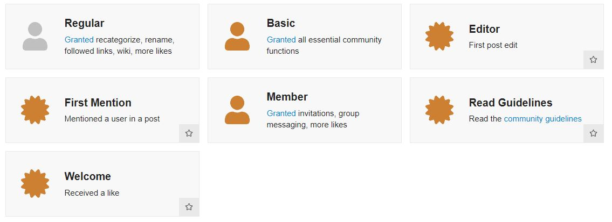
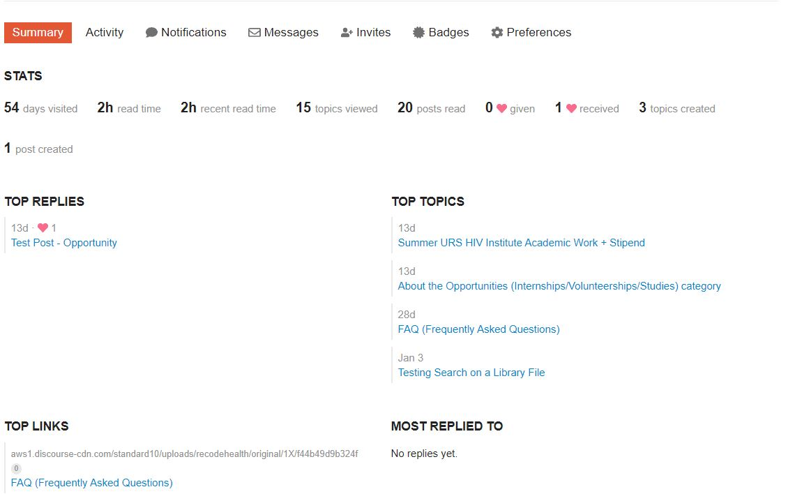
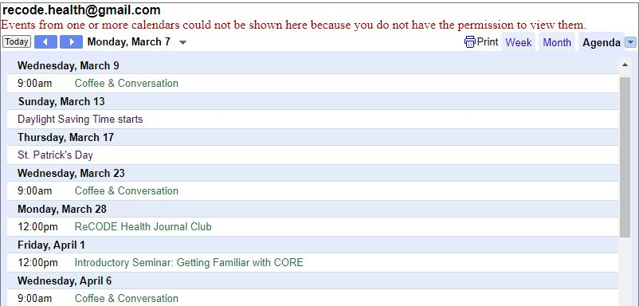
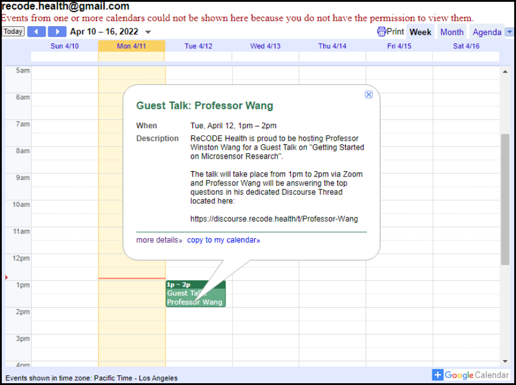
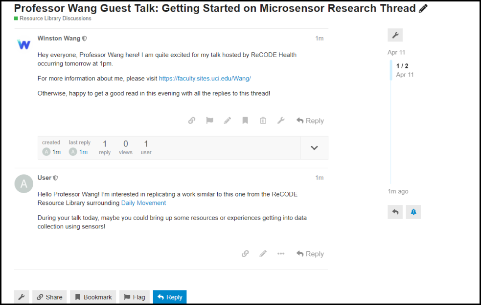
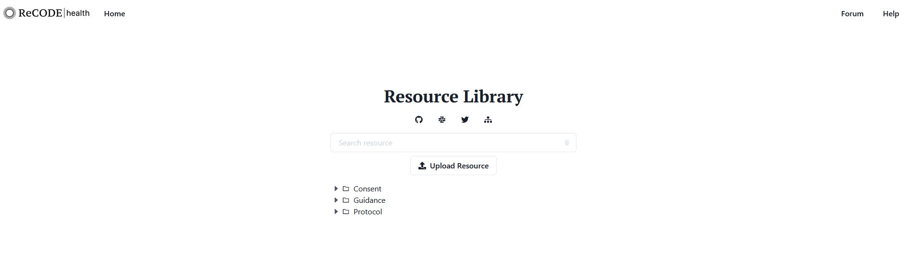
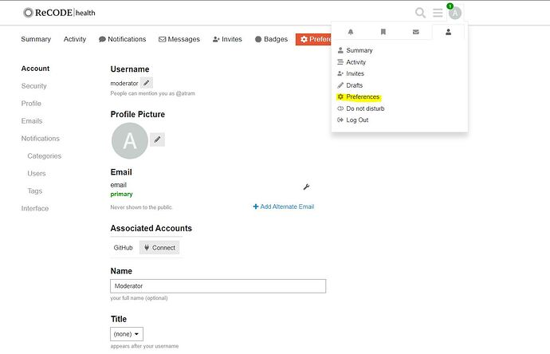
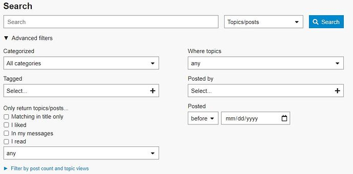

ReCODE Health Discourse and Resource Library FAQ: Frequently Asked Questions
What is the ReCODE Discourse Forum and Resource Library?
How Do I Make an Account?
Using our Account Creation Guide you'll have a step-by-step process that'll show you how to make an account and what you can do with said account.
- This guide is static and is intended for users to use alongside another window or tab of the main Discourse Page.

What's Unique About Discourse versus other Forums like Reddit?
Badge Collection, Customizable Notifications, Access to Digital Health Related Events and Opportunities
- What are Badges? Discourse has a unique system that rewards user's with Badges. These badges can be obtained through engagement with other users and garnering likes/replies in your posts. Our moderator team keeps an eye out for certain badges, so you can even be featured on our Hub page if one of your posts go viral! 
- The Discourse Platform offers an in-depth account overview, allowing you to see your personal stats and even change the visual theme of your Discourse experience. Though our main goal is to simply offer a platform for discussion surrounding Digital Health Research, your organizations and classes could incorporate Discourse into your interactions by having an Engagement Quota. 
- Located at the bottom of the Discourse Home Page is a Google Calendar Embedding that our Moderator Team will populate with organized events and seminars sporadically. 
- Guest Talks, Office Hours with Graduate Students or Moderators, a Journal Club, and other events in the ideation log are other ways you can find merit in being a member of the ReCODE Health Platform. 
I Want To Engage With Other Users. How and Where Should I Start?
First. Here Are Some Things To Review
- Community guidelines, every user must abide by these rules in orde for everyone to have a great experience in our community!
- What are Flags? Here at ReCODE Health, we want to enable our users with the ability to enforce the community guidelines we introduced to you above. We have a dedicated moderator team and will hear out your flags and messages as soon as we can!
Take a look at this example interaction we've mocked up to demonstrate what an engagment in a thread could look like.
- Reference the Resource Library, our ever-expanding collection of Academic Works can act as valuable references or evidence to bring up in your conversations on Discourse.
- What are Snippets? Snippets are a version of an uploaded work that the uploader thought would be better shortened. You could take advantage of these Snippets and use them as quick references and context.
Upload To The Resource Library
As a member of ReCODE Health, you have the ability to contribute to our growing Resource Library of various Digital Health Works
- Resource Library, navigating to this link will prompt you with this page 
- Beneath the search bar you'll see a button that will allow you to being the Resource Uploading Process
- Clicking on that button, you'll be prompted with a series of questions and if everything checks out with our moderators then you'll see your work on both our library and Discourse page for discussion!


How Do I Update My Username
Navigate to your User Settings
- Clicking on your profile icon in the top right, select the person icon and look for a gear icon labeled preferences. 
- You'll then be taken to a page like the one displayed here. You'll be able to change your username, emails, profile pictures, etc.
How Do I Use the Advanced Search?
Look at the Nav Bar
- Upon clicking the magnifying glass in the top right, you'll be able to open an advanced search by clicking the button within the search input bar.
- Scroll down and you'll be shown the image displayed here 
- There are various filters that you can apply to refine your search to the specific posts you're looking for
- We recommend bookmarked, previously liked, and tag-based searches as excellent filters to find posts you've encountered that you have lost track of.